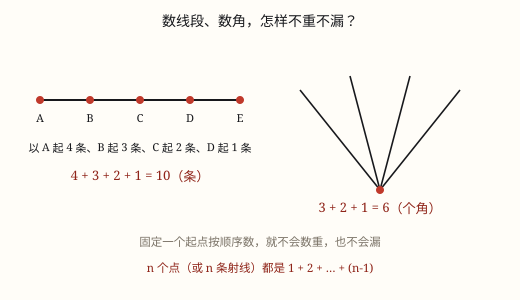

数图形中的规律与推理
线段、角、三角形，数法其实是同一套：固定一个起点，按顺序配对——不重不漏靠顺序，不靠眼力。
| 所属主题 | 探索规律 |
|---|---|
| 所属模块 | 数学思考 |
| 课标学段 | 第一学段（1~2年级） |
| 前置知识 | 线段、射线、直线与角的认识、常用的数学思想和方法、数据的收集、整理与统计表 |
| 核心素养 | 几何直观推理意识模型意识应用意识数据意识 |
教材定位
人民教育出版社《2024年版》
对应六上数学广角「数与形」：数图形中的规律。；对应二下数学广角「推理」：从确定信息出发排除可能。
课标要求
| 数与代数·数量关系 | 探索用数或符号表达简单情境中的变化规律（例4和例5）。 印刷第 19 页 行为动词：探索 |
|---|---|
| 数与代数·数量关系 | 能解决生活中的简单问题，并能对结果的实际意义作出解释，经历探索简单规律的过程（例14），形成初步的模型意识和应用意识。 印刷第 21 页 行为动词：运用 |
| 数与代数·数与运算 | 在解决生活情境问题的过程中，体会数和运算的意义，形成初步的符号意识、数感、运算能力和推理意识。 印刷第 18 页 行为动词：体验 |
说明
数图形最怕两件事：数重了、数漏了。很多人以为数得准靠眼力好，其实靠的是顺序——每一类都按同一个方向、同一个起点往下数，重不了也漏不了。
一条直线上有 5 个点（含两端），一共能数出多少条线段？办法是固定左端点：从最左边的点出发向右连，能连 4 条；从第二个点出发 3 条；第三个点 2 条；第四个点 1 条；最后一个点右边没有点，0 条。4 + 3 + 2 + 1 = 10 条。为什么不会重？每条线段都被它的左端点认领了一次，而左端点只有一个。
从一点引出 5 条射线，一共有多少个角？办法一样，只把「点」换成「边」：固定最上面那条边作始边，它与下面 4 条边各组成一个角；再从第二条边出发，与下面 3 条边组成 3 个角……4 + 3 + 2 + 1 = 10 个。一条射线就相当于一个位置，两者是一回事。
一个大三角形，从顶点向底边引 4 条线，分成 5 个小三角形，一共多少个三角形？这里要先分类再数：由 1 个小三角形组成的 5 个，2 个拼成的 4 个，3 个拼成的 3 个，4 个拼成的 2 个，5 个拼成的 1 个，合起来就是 5 + 4 + 3 + 2 + 1 = 15 个。分类的标准是「由几个小三角形拼成」，类与类不重叠；每一类内部，再按最左边那条边定位。
三种图形，数法长得一模一样，因为它们数的都是「从若干位置里挑两个」：两个端点定一条线段，两条边定一个角，也是两条边定一个三角形。
（推理）
有些题不用算，也不用量，只要想一想就能答出来：三个小朋友赛跑，甲说「我不是第一」，乙说「我是第二」，丙说「我不是第三」，谁是第一？谁是第三？这种从已知条件推出结论的思考，就叫推理。
推理的诀窍是从最确定的信息开始。上面那句「乙是第二」最确定，一下就把一个位置钉死了；「甲不是第一」只排除了一个位置，信息量小得多。所以拿到题目先问自己：哪句话最没有余地？先用它。
接着一条一条排除。把可能的答案列成一张单子：名字对位置、数字对条件，谁配谁，就把配不上的划掉。上面那题：乙占了第二，剩下第一和第三；甲说自己不是第一，那就只能排第三，丙自然排第一。三句话用完，答案齐了。
信息够不够，决定有没有唯一答案。如果排除到最后还剩两个可能，那就是条件给少了，还缺一条。这不是「猜不出来」，而是「题目本身没说清」——把两种可能都列出来，说明缺什么，比硬挑一个答案诚实得多。
列表是最省心的做法：横着写名字，竖着写位置，一条信息划掉一行，答案自己就浮出来了。名字多、条件多的时候，列表比在脑子里转可靠得多。
推理不是只有一种玩法：可以用排除法，可以用列表法，也可以先假设某件事成立，看会不会推出矛盾——矛盾了，这个假设就被否掉了。方法不同，答案应该一样；答案不一样，说明有一处推理错了，回头检查。
使用场景
数车票：地铁任意两站之间一种票，问要准备多少种。
数角：扇骨、自行车辐条、灯柱拉索之间有几个夹角。
数三角形：桥梁桁架、屋顶钢架里藏着多少个三角形。
数长方形：窗格、地砖拼出的长方形一共有多少个。
（推理）
猜数字游戏：老师说一个两位数，大家轮流提线索，用排除法一步步逼近答案。
猜名次：运动会、抽奖、排队比赛，用「谁在谁前面」排出完整顺序。
分清三个盒子：三个盒子标签全贴错了，从摸出来的东西反推每个盒子装什么。
找失物：书包里的东西被人拿错了，根据几个人各自的说法判断东西在谁手里。
生活小调查：调查班里同学的爱好，问几句话就能把分类填完整。
注意点
先分类再数：类与类不能重叠，否则一定重数。
每类内部固定方向：从左到右、从上到下，不许回头。
点和间隔不是一回事：6 个点之间只有 5 个间隔，却能连出 15 条线段。
大的图形最容易被漏：拼起来的大三角形、大角，常常没人认领。
（推理）
先找最确定的那句话。「是第二」比「不是第一」有用得多，先用它，剩下的可能性一下少一半。
排除要一条一条来。别把几条信息合在一起凭感觉猜，每划掉一项都要说得出是依据哪句话。
别把「可能」当成「一定」。排除到还剩两个可能时，正确答案是「还不能确定」，不是随便挑一个。
条件用完要回头检查。把得出的答案代回每句话验证一遍，有一条对不上就说明某一步推错了。
列表时一行只填一个。一个人、一件东西只能占一个格子，填重了就把问题搅乱了。

图 1：固定起点顺着数，线段和角都数得清
为什么是这样
算理推导
每个图形都由「两个位置」确定：线段由两个端点确定，角由两条边确定，三角形也由两条边确定。
给这两个位置定个规矩：总是拿靠左（或靠上）的那个当第一个。这样任意一对位置都有唯一的「第一个」，不会有第二种说法。
按第一个位置排队：第一个位置在最左边时，第二个位置有 4 种；第一个位置在第二个点时，第二个位置只剩 3 种——不能往左，否则和前面重复。
于是总数就是 4 + 3 + 2 + 1。不重不漏不是因为数得仔细，而是因为每一对都被唯一地安排了位置。
（推理）
先看清题目要的是什么：不是算出一个数，而是从几条关于「谁」或「什么」的话里，推出唯一的那一种搭配。推理的结果必须是唯一的，否则就该说「条件不足」。
给每条信息称一称分量：「乙是第二」直接把乙钉在第二格，能一次划掉乙占其他位置的可能；「甲不是第一」只划掉一种可能。信息量差别很大，先用分量最重的那句，效率最高。
把确定下来的先写下来：乙 → 第二。这一格填上，其他三人的可能性就少了一层，剩下的格子只能在剩下的人之间分。
接着一条一条排除。乙已经占了第二，第一格和第三格只能留给甲和丙。丙说「不是第三」，丙就只能在第一格，甲只能去第三格。这时候发现甲那句「不是第一」还没用上，正好接上：甲在第三格，确实不是第一。三句话全部用完，答案唯一。
所以整条路是这样的：先把最确定的钉住 → 列出所有可能 → 一条一条划掉 → 检查条件是否用完 → 答案唯一才落笔。中间任何一步发现还剩两个可能，就回头看看是不是漏了一句、或者题目本来就缺条件。
为什么一定要这样，而不能凭感觉猜？因为排除法每一步都能指着某句话说「因为你排除了它」，答案经得起别人检查；而「我感觉是甲」说不出理由，下一次换个题目就全错了。
动手实验
在一条直线上点 6 个点。先凭眼睛数，叫几个同学一起数，很可能有人数出 13 条、有人数出 16 条。再用固定左端的办法数：5 + 4 + 3 + 2 + 1 = 15 条。两次结果一对比就明白：靠聪明不如靠顺序。 （推理） 和同桌玩「猜名次」：准备 3 张写着甲、乙、丙的卡片和 3 张写着 1、2、3 的卡片，先把名字卡排好，让同桌抽一张当「乙」，再给两条提示（「乙是第二」「甲不是第一」），你在纸上画一个 3 行的表格，一边排除一边打叉，看能不能定下三个人的顺序。然后两人交换角色，你出线索、同桌排除，最后互相核对答案。
按场景的例题
例 1（场景：行程出行） 地铁要印多少种车票
一条地铁线有 6 个站，任意两站之间有一种车票，单程一共要准备多少种？
解：把车站看成 6 个点，车票就是两点之间的线段。固定起点：从第 1 站出发 5 种，第 2 站 4 种……5 + 4 + 3 + 2 + 1 = 15。
答：15 种。
例 2（场景：校园生活） 见面握手
8 名同学两两握手，一共握多少次？
解：固定一个人：第 1 人和后面 7 人握 7 次，第 2 人再和后面 6 人握 6 次，依次递减，7 + 6 + 5 + 4 + 3 + 2 + 1 = 28。
答：28 次。
例 3（场景：工程建造） 桥梁的三角桁架
一个大三角形，从顶点向底边引 3 条线，把它分成 4 个小三角形。图里一共有多少个三角形？
解：按拼成的小三角形个数分类：1 个的 4 个，2 个拼的 3 个，3 个拼的 2 个，4 个拼的 1 个，4 + 3 + 2 + 1 = 10。
答：10 个。
例 4（场景：绿化照明） 灯柱上的拉索
广场灯柱上拉 5 根钢索固定，每两根钢索之间形成一个夹角，一共有多少个角？
解：固定最上面一根：它与下面 4 根组成 4 个角；第二根与下面 3 根组成 3 个……4 + 3 + 2 + 1 = 10。
答：10 个角。
例 5（场景：农业生产） 运动会跑步比赛排名
甲、乙、丙三人赛跑。甲说「我不是第一」，乙说「我是第二」，丙说「我不是第三」。谁是第一，谁是第三？
解：先钉住最确定的一句：乙是第二。第一和第三留给甲、丙。甲说「不是第一」，甲只能排第三；丙说「不是第三」，丙正好排第一。
答：丙是第一，甲是第三，乙是第二。
例 6（场景：购物消费） 三人各买了一件不同价格的衣服
三件衣服的价格分别是 88 元、135 元、200 元。小丽说「我买的不是最贵的」，小华说「我买的比小芳的贵」，小芳说「我买的是最便宜的」。三人各买了哪件？
解：小芳确定买最便宜的 88 元。小丽说不是最贵的，那 200 元只能是小华的（如果小丽买 200 元就与「不是最贵」矛盾）；剩下 135 元是小丽的。检查小华的话：200 元比 88 元贵，成立。
答：小芳买 88 元，小丽买 135 元，小华买 200 元。
例 7（场景：家庭与年龄） 猜猜爸爸的年龄
爸爸的年龄是一个两位数，十位上的数比个位上的数大 3，两个数字加起来是 9。爸爸多少岁？
解：十位比个位大 3 的两位数有 30、41、52、63、74、85、96。再用「两个数字加起来是 9」这条：30 是 3+0=3，41 是 4+1=5，52 是 5+2=7，63 是 6+3=9，74 是 7+4=11，85 是 8+5=13，96 是 9+6=15，只有 63 符合。
答：爸爸 63 岁。
例 8（场景：物流运输） 三个快递包裹的轻重
三个包裹的重量分别是 1 千克、2 千克、3 千克。甲的包裹不是最重的，乙的包裹比丙的轻，甲的包裹比乙的轻。三个包裹各是多少千克？
解：把三句话翻译成轻重关系：乙比丙轻，甲比乙轻，连起来就是甲最轻、丙最重。三个重量 1、2、3 千克各不相同，由甲比乙轻、乙比丙轻可知甲是 1 千克、乙是 2 千克、丙是 3 千克。再看甲的包裹不是最重的，符合。
答：甲 1 千克，乙 2 千克，丙 3 千克。
常用推论
同一条直线上有 n 个点，线段总数 = (n − 1) + (n − 2) + … + 1。
从一点引出 n 条射线，角的个数与 n 个点的线段数完全相同。
三角形被从顶点引出的 n − 1 条线分成 n 个小三角形时，三角形总数 = n + (n − 1) + … + 1 = n × (n + 1) ÷ 2。（拓展）
数长方形、正方形也一样：先按「几行几列」分类，再按同一方向数。
分类时类与类不能重叠，这是「不重不漏」的第一条纪律。
信息越确定越有用：「是第二」一次能排除 3 种可能，「不是第一」只排除 1 种。
把答案代回每一条信息逐一检查，全部对上，推理才算完成。
如果所有信息用完后还剩两种可能，说明条件不足，正确回答是「还不能确定」。
列表法、排除法、假设法得到的结果必须一致；不一致就说明中间有一步错了。
同一件事用不同的推理方法想一遍，是检查自己有没有算错的好办法。
易错点
错数三角形只数出 5 个小三角形，答 5 个。
为什么错只数了「由一个小三角形组成」这一类，两个、三个拼起来的都没数。
正确按拼成的个数分类：5 + 4 + 3 + 2 + 1 = 15 个。
错数线段时从中间随便挑着数，数出 9 条或者 11 条。
为什么错没有固定起点，同一条被数了两次，或者某一条谁都没数。
正确固定左端点，4 + 3 + 2 + 1 = 10 条。
错6 个点，答「能连 5 条线段」。
为什么错5 是相邻两点之间的间隔数；线段可以由任意两点连成，不止相邻的。
正确相邻的 5 条只是其中一部分，全部线段是 15 条。
错看到「甲说我不是第一」，就答「甲是第二」。
为什么错「不是第一」只排除了第一这个位置，甲完全可能在第三，也可能真的在第二——不能只凭一句话就定下来。
正确先钉住「乙是第二」，再看甲不是第一、丙不是第三，两句话合起来才排得出完整顺序：丙第一、甲第三、乙第二。
错「十位比个位大 3」，就把 41、52、63、74、85、96 全列出来，说「有几个答案，我随便写一个 41」。
为什么错还有一条信息「两个数字加起来是 9」没有用。推理要用完所有条件，剩下的可能多于一个时就还没推完。
正确把「两数之和是 9」也用上：只有 63 的 6+3=9，答案是 63。
错标签全错的题里，直接照着标签念：「标『苹果』的盒子里是苹果」。
为什么错题目说标签全都贴错了，照标签读等于一条信息都没用。
正确标「苹果」的盒里摸出梨，说明它装的是梨；标「梨」的盒不能装梨，苹果又被占了，所以它装苹果；剩下标「橘子」的盒装橘子。
错三种可能都用完后，凭「感觉更像」挑一个写上答案，还说「应该是这个吧」。
为什么错推理的结论要么唯一，要么承认条件不足。凭感觉挑一个，答案没有依据，也经不起别人检查。
正确把两个可能都列出来，说明「信息不足，还需要一条线索」，这才是准确的回答。
直观理解
数图形像点名：40 个人，谁想起来了就喊一声，一定有人漏掉；按座位表一行一行点，一个也不会少。图形没有座位表，就自己造一张——按左端点排队，就是给每条线段安排了座位。 （推理） 推理像玩「找不同」：眼前摆着几个可能，你手上每有一条确定的线索，就能划掉一批不可能，剩下那个自己就露出来了。怕的是不肯划、只想一步猜准——可线索再全，也是一句一句用出来的，不是靠灵感。
数图形，先分类；定起点，按顺序；从左到右不回头，不重不漏自然有。 （推理） 确定的先用上，不能的全划光；条件用完了，答案才亮相。